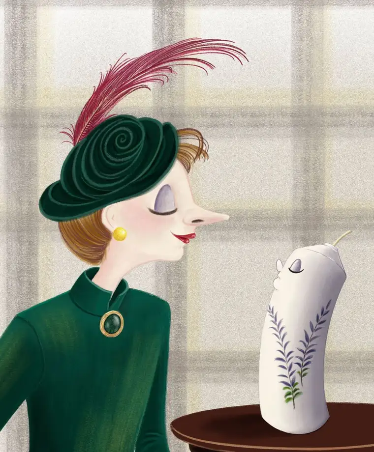
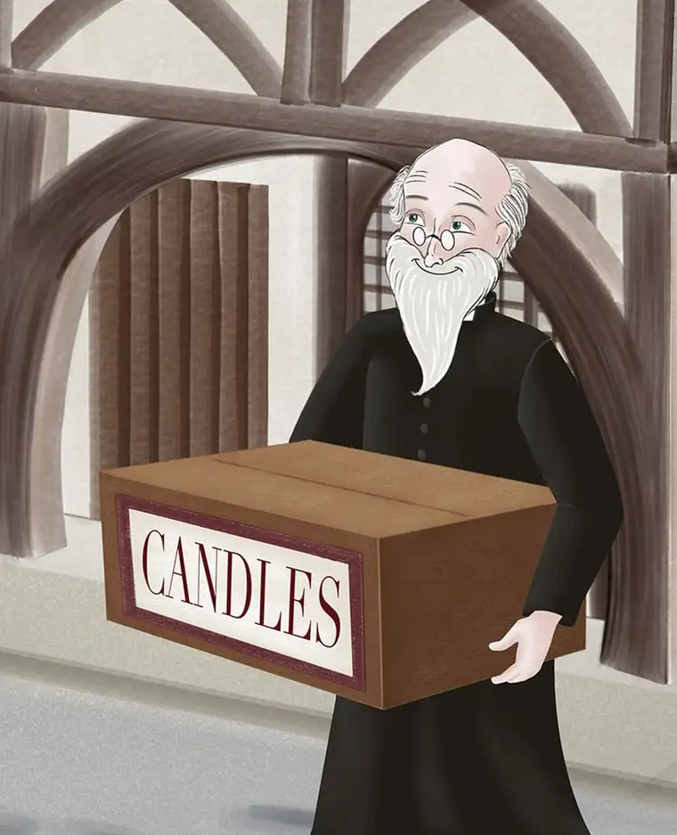
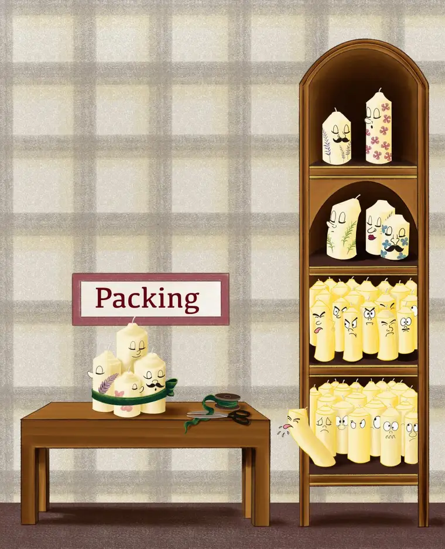
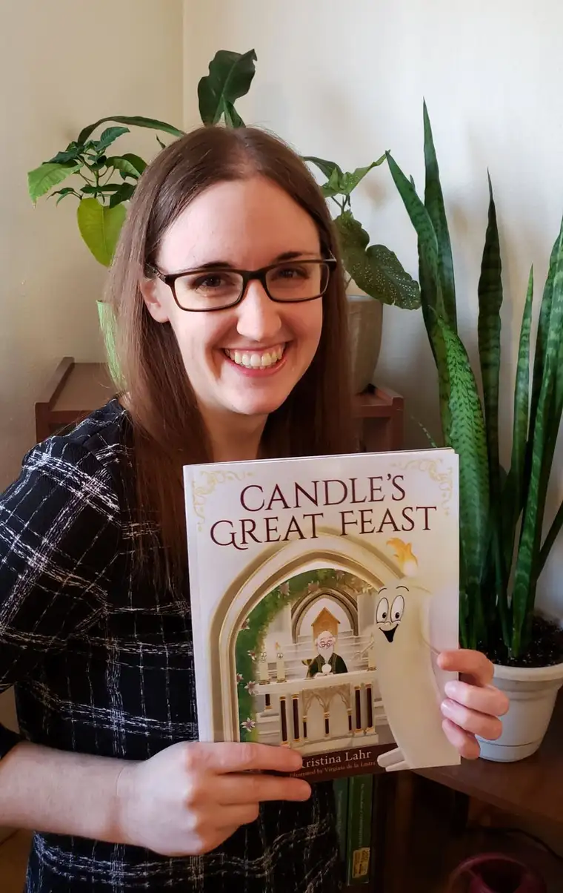

One by one, the candles with the best aromas and greatest design leave the candle shop that sits on a busy street. And day by day, the small candle tucked furthest away from the light, in the back of the shelf, loses hope.
But hope begins to be restored the day a man in a black cloak enters the shop. Only later will the little candle understand his greatest yearning is about to come true; that soon, he will be placed upon the altar of the Eucharistic feast.

“Candle’s Great Feast,” a new children’s book by author Kristina Lahr, with illustrations provided by Virginia de la Lastra, presents a tale sure to delight the youngest of picture-book enthusiasts, along with their readers.

Lahr, who works in communications for the Diocese of Fargo, says she didn’t intend to write a children’s book. “I’ve spent considerably more time and energy working on a novel, short stories, articles, and other musings,” she shares on her website. “While I hope some of my other stories will find their way to the spotlight someday, a little candle stole the show first.”
It was during her time in Eucharistic adoration that Lahr began to see and hear the story of the little candle coming to life.
“Sometime in 2017, I often found myself at the adoration chapel at St. Mary’s Cathedral in Fargo. I’d come discouraged and exhausted, praying that Jesus would show me a new direction in my life or provide some consolation that I was on the right path.”
One day, she came to the chapel with a heavy heart. While sitting in Jesus’ presence, Lahr says, she brought her frustrations to mind — particularly her feelings of being “trapped” because her desire to be a writer didn’t seem to be bearing fruit, yet no other desire seemed so strong.
“I found myself staring at the monstrance and wishing my life could be more like one of the four candles surrounding it,” Lahr writes. “They didn’t question the desires God gave them. They didn’t feel trapped. They didn’t worry if they were good enough.”
And in the middle of this moment of despair, a little candle jumped into Lahr’s imagination, seeming as real as any creation she’d ever dreamed up to that point.
“I wrote the first draft of Candle’s Great Feast’ in the chapel without any idea what I’d do with it,” Lahr says. For several years, she kept it close, but tucked away — like the candle in the back of the shelf — but, Lahr says, every time she returned to the chapel, “Jesus would remind me of that little candle and how happy I’d been writing about him.”
And so she continued refining the manuscript, later pairing with de la Lastra, whose lively illustrations bring additional vitality to the endearing tale.

Despite its simple message, “Candle’s Great Feast” is anything but simple in truth. After all, this little candle’s mission of being part of an elaborate celebration ends in his joining the greatest feast imaginable — the source and summit of the Christian life.
“Not only will a 2-year-old enjoy this, but their parents will, too,” “Lahr says. “The Eucharist is real and beautiful, and there’s something more here we can discover and appreciate about the Mass.”
“Candle’s Great Feast” can be purchased through Lahr at kristinalahr.com, barnesandnoble.com; and amazon.com. Locally, the book can be found at Hurley’s Religious Goods, Fargo; Holy Family Bookstore, Fargo; and Hidden Treasure, Sauk Centre, MN.